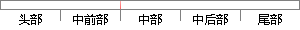

用户在登录本应用后，可以进入个人中心进行与个人相关信息查看、修改。
片段位置图

相似结果|
相似片段 1：的用户个人信息修改密码 用户编号、编号、原始密码、新密码 修改成功提示信息用户登录系统后，点击进入个人中心即可查看自己的个人信息，对于邮箱、生日等个人信息用户可以点击修改按钮重新输入相关信息进行修改
相似片段 2：可修改的基本信息校验规则 l、必填字段：姓名，真实姓名，电话，邮箱会员登录系统，进入个人中心可以查询个人订单，在查询订单的时候会对用户账户进行验证，验证是否登录或者会话是否过期，如果用户未登录或者会话已过期则没有权限查看个人订单。
相似片段 3：基本资料维护登录用户进入个人中心页面点击“个人资料”按钮用户登录成功之后，可以在个人中心查看用户的详细信息、修改、删除、增加个人信息。6 信息发布 进入发布信息页面用户填写想要发布的信息内容，点击“发布
相似片段 4：和已选课程的管理，用户可以取消个人课程收藏和退选已选课程。处理流程：用户登录后，进入个人中心查看与退选已选课程，查看与取消收藏课程。也可以查看、修改和完善个人注册信息。26个人中心设计结构图，如图 3-10 所示，前台用户操作流程图如图 3-11 所示。
相似片段 5：模块个人中心是用户登录成功的主页面，是用户个人信息的主要管理模块，在用户正确输入用户名和密码以后，进入个人中心页面。个人中心应包括个人信息中心和消息管理，在个人信息中心用户可以查看和修改个人信息，查看
|
※ 片段修改建议 ※
近似词参考：- 应用：利用 运用
- 个人：小我 小我私家
- 中心：中间 中央
- 进行：举行
- 个人：小我 小我私家
- 相关：相干
- 查看：检察
- 修改：点窜
系统自动生成语句：用户在登录本利用后，可以进入小我中间举行与小我相干信息检察、点窜。
注：本片段修改建议为系统自动生成，仅供参考。